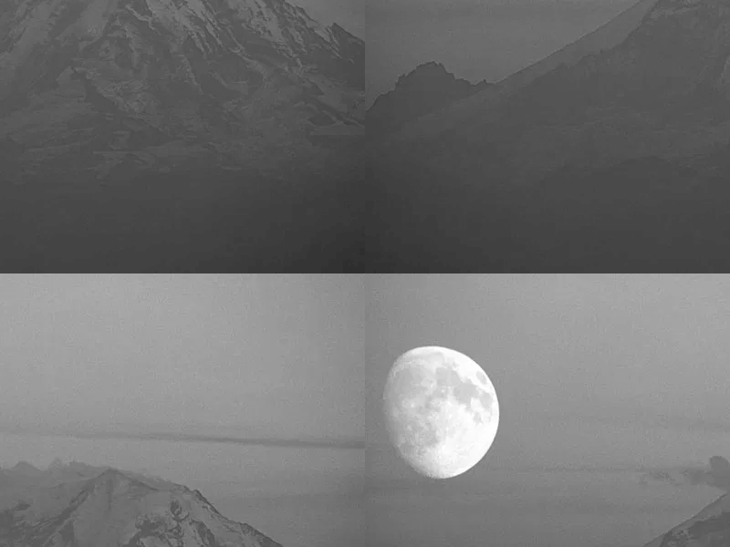

on
[EX-01] Região negativa e troca de regiões
Exercício 1.1
Objetivo
Utilizando o programa exemplos/pixels.cpp como referência, implemente um programa regions.cpp. Esse programa deverá solicitar ao usuário as coordenadas de dois pontos P1 e P2 localizados dentro dos limites do tamanho da imagem e exibir que lhe for fornecida. Entretanto, a região definida pelo retângulo de vértices opostos definidos pelos pontos P1 e P2 será exibida com o negativo da imagem na região correspondente.
Implementação
Para os testes, iremos utilizar uma imagem de resolução 800x600 denominada mountain.png. Primeiramente, precisamos ler a imagem do disco em modo de escala de cinza, para isso, utilizamos o método imread() do OpenCV com o argumento cv::IMREAD_GRAYSCALE. Em seguida, verificamos se a imagem foi carregada corretamente, e caso não, retornamos um erro. Se a operação foi executada com sucesso, entretando, seguimos com a execução do programa, obtemos as dimensões da imagem e a armazenamos em uma variável chamada imageSize.
regions.cpp
[...]
cv::Mat image =
cv::imread("../assets/images/mountain.png", cv::IMREAD_GRAYSCALE);
if (!image.data) {
std::cout << "Error while opening the image.\n";
return -1;
}
cv::Size imageSize = image.size();
[...]Então, obtemos os pontos fornecidos pelo usuário, através da função getPointCoordinates() e os validamos, com isAValidPoint(). A primeira função, utiliza std::cout e std::cin para printar e coletar informações do usuário no terminal, guardando-as em uma variável do tipo Point, as quais guarda as posições x e y. Já a segunda função, verifica se o ponto em questão está dentro do limite das dimensões da imagem, especificado pela variável imageSize.
regions.cpp
[...]
struct Point p1 = getPointCoordinates("1");
struct Point p2 = getPointCoordinates("2");
if (!isAValidPoint(p1, imageSize)) {
std::cout << "Invalid coordinates for point P1.\n";
return -1;
};
if (!isAValidPoint(p2, imageSize)) {
std::cout << "Invalid coordinates for point P2.\n";
return -1;
};
[...]Após isso, percorremos a matrix da imagem horizontalmente e verticalmente, de acordo com os pontos fornecidos, e para cada ponto, substituimos seu valor pelo seu complemento, com base no total de 255 tons que podemos representar utilizando 8 bits. Por fim, usamos imshow() para mostrar a imagem resultante.
regions.cpp
[...]
for (int i = p1.x; i < p2.x; i++) {
for (int j = p1.y; j < p2.y; j++) {
image.at<uchar>(i, j) = 255 - image.at<uchar>(i, j);
}
}
cv::imshow("window", image);
cv::waitKey();
[...]Resultados
Imagem original (mountain.png)
Utilizando os valores
$ make regions && ./regions
> Point 1 coordinates
x: 0
y: 0
> Point 2 coordinates
x: 500
y: 700
Obtemos a seguinte imagem:
 Imagem processada
Imagem processada
Exercício 1.2
Objetivo
Utilizando o programa exemplos/pixels.cpp como referência, implemente um programa trocaregioes.cpp. Seu programa deverá trocar os quadrantes em diagonal na imagem. Explore o uso da classe Mat e seus construtores para criar as regiões que serão trocadas.
Implementação
Assim como no exercício 1.1, primeiramente lemos a imagem em disco, verificamos se a operação foi executada corretamente e obtemos suas dimensões.
trocaregioes.cpp
[...]
cv::Mat image =
cv::imread("../assets/images/mountain.png", cv::IMREAD_GRAYSCALE);
int imageWidth = image.size().width;
int imageHeight = image.size().height;
if (!image.data)
std::cout << "Error while opening the image.\n";
[...]Então, geramos uma nova matriz composta de zeros, de mesma dimensão e tipo da imagem fornecida, por meio do método zeros(). De posse dela, percorremos cada quadrante da imagem original, com base em sua altura e largura, e atribuimos cada valor ao quadrante inverso na nova matriz newImage.
Os quadrantes podem ser definidos dividindo a imagem 4 partes, levando em consideração os pontos (0,0), (largura/2, altura/2), (largura, altura) e suas variações.
trocaregioes.cpp
[...]
cv::Mat newImage = cv::Mat::zeros(imageHeight, imageWidth, CV_8UC1);
// First quadrant
for (int i = 0; i < imageHeight / 2; i++) {
for (int j = 0; j < imageWidth / 2; j++) {
newImage.at<uchar>(imageHeight / 2 + i, imageWidth / 2 + j) =
image.at<uchar>(i, j);
}
}
// Second quadrant
for (int i = 0; i < imageHeight / 2; i++) {
for (int j = imageWidth / 2; j < imageWidth; j++) {
newImage.at<uchar>(imageHeight / 2 + i - 1, imageWidth / 2 + j) =
image.at<uchar>(i, j);
}
}
// Third quadrant
for (int i = imageHeight / 2; i < imageHeight; i++) {
for (int j = 0; j < imageWidth / 2; j++) {
newImage.at<uchar>(i - imageHeight / 2, j + imageWidth / 2) =
image.at<uchar>(i, j);
}
}
// Forth quadrant
for (int i = imageHeight / 2; i < imageHeight; i++) {
for (int j = imageWidth / 2; j < imageWidth; j++) {
newImage.at<uchar>(i - imageHeight / 2, j - imageWidth / 2) =
image.at<uchar>(i, j);
}
}
[...]Resultados
Imagem original (mountain.png)
Após a execução do programa, obtemos a seguinte imagem:
 Imagem processada